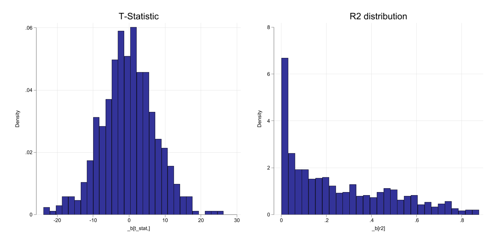

Defending the Sacred time line
Last week
- What we learned last week a few methodologies for analyzing time series data.
- Static model, dynamic models, use of trends and seasonality, etc.
- All those models, however, were based on very strong assumptions.
- Strict Exogeneity, strict Homoskedasticity, and no serial correlation are difficult to defend.
- Statistical inference validity depends on normality assumption of the error.
- Can we relax this assumptions?
- Yes, but we need to impose additional assumtions to the data
This week
One way to relax the assumption of Strict Exogeneiety is assume time series are stationary and weakly dependent.
- With this assumptions, LLN and CLT will hold for TS model.
What do these two assumptions mean? (stationary and weakly dependent?)
Namely, these assumptions impose restrictions on how data SHOULD behaive, so we can learn something from the data.
- This means that what we observe in the data are based on data that has stable patterns. Otherwise, if they are unpredictable, we cannot learn anything. (This is the idea of stationarity)
- At the same time, data cannot depend on its own past too much. So if we look at two periods that are farther apart, its like they are independent for most practical purposes.
Can you recognized this type of data?
Stationary Process
- A Stationary process is one where the characteristics of the distribution remains Stable across time.
- So we can learn something about it
For example consider the series \(x=[x_1,x_2,\dots,x_T]\), where \(T\) can be vary large (infinite)
- If the series is stationary, then:
\[f(x_t, x_{t+k}) = f(x_s, x_{s+k}) \forall s, k\]
In other words, the distribution across time does not change. (is stable, thus stationary)
Otherwise, if the distribution function changes constantly, we cannot learn about it, thus making sense of regressions would be even more difficult.
Testing for Stationarity
Testing for stationarity is not easy. (how do you test for stability of densities?)
Instead, from an empirical point of view, we focus on the first 2 moments of the distribution: mean, variance and covariance.
Thus:
A series \(x=[x_1,x_2,\dots,x_T]\) is stationary if:
- \(E(x_t)=E(x_s)=\mu_x\). Constant mean
- \(E(x_t^2)<\infty\). Finite variance
- \(Var(x_t)=Var(x_s)=\sigma_x^2\). Constant variance
- \(cov(x_t,x_{t+k})=cov(x_s,x_{s+k})\). Constant covariance
The Series repeats itself.
Weakly Dependent Series
Dependence should be understood as a measure of how much a series depends on its own past.
- Weakly dependent series are those that depend on its own past, but not too much.
From the technical point of view:
- If \(x_t\) is weakly dependent, then \(\lim_{k\rightarrow \infty} corr(x_t,x_{t+k})=0\) sufficiently fast.
If this happens, LLN and CLT will hold for TS data.
Why?
- Omiting \(x_{t+1}\) would typically generate an Omitted Variable Bias.
- If data are weakly dependent, however, we won’t suffer from OMB
- This is because omitting \(x_{t+1}\) is like omitting a unrelated variable.
NOTE: Weakly dependent variables can be non-stationary. (we call them stationary around a trend)
Visualizing weakly dependent vs strongly dependent

Example of Weakly Dependent Series
- AR(1) process: \(x_t = \rho x_{t-1} + \epsilon_t\)
- Mean in constant (not depent on time)
- Variance is constant (not depent on time)
- Covariance does not depend on time (just on lag)
- If \(|\rho|<1\), then \(x_t\) is weakly dependent.
- MA(1) process: \(x_t = \epsilon_t + \theta \epsilon_{t-1}\)
- Constant mean and variance.
- Covariance does not depend on time.
- Covariance bettween \(x_t\) and \(x_{t+k}\) is zero for \(k>1\).
- ARMA(1,1) \(x_t = \rho x_{t-1} + \epsilon_t + \theta \epsilon_{t-1}\)
Special Case AR(1) with \(\rho=1\)
- If \(\rho=1\), we have a random walk process \(x_t = x_{t-1} + \epsilon_t\)
- This is a process that holds grudges (it remembers its past)
\[x_t = x_{t=0}+e_1+e_2+\dots+e_t\]
- This process has constant mean (\(x_0\)), but variance and covariance are not constant. With a correlation that dissapears slowly.
\[Var(x_t) = t\sigma^2 \text{ and } cov(x_t,x_{t+h}) = t\sigma^2\]
\[corr(x_t,x_{t+h}) = \frac{t \sigma^2}{\sqrt{t(t+h)}\sigma^2}=\sqrt{\frac{t}{t+h}}\]
Economics: With weakly dependent data, policies are transitory, with persistent data effects are longlasting.
Special Case: non-stationary weakly dependent
- There are few cases where a series is weakly dependent but non-stationary.
\[x_t = \rho x_{t-1} + \delta t + \epsilon_t\]
- \(E(x_t)\) is not constant, but this series is still weakly dependent if \(|\rho|<1\).
- If the data is detrended, however, it becomes stationary.
Example: Stationary around a trend
\(x_t = 0.5*x_{t-1}+0.1 t + u_t\)

Example: Random Walks look with a drift
\[x_t = x_{t-1} + 0.1 + \epsilon_t\]

How do things change: Assumptions
A1. Linear in Parameters (same as before), but all variables are stationary and weakly dependent.
A2. No Perfect Colinearity
A3. Zero Conditional Mean: \(E(u_t|x_t)=0\) Contemporaneous exogeneity!
Omitting lags of \(x_t\) is not a problem, because they are weakly “independent” of \(x_t\).
A1-A3 OLS is consistent.
Why does this matter??
- Because, under Strict exogeneity, we cannot allow for Lags of the outcome to be included in the model.
- Under weak exogeneity, lags can be included.
How do things change: Assumptions
A4. Homoskedasticity: \(Var(u_t|x_t)=\sigma^2\) (also we just need contemporaenous homoskedasticity)
A5. No Serial Correlation: \(cov(u_t,u_s|x_t)=0\) for \(t\neq s\)
These two assumptions that make “life” easier for estimating standard errors because:
- Under A1-A5, OLS estimators are asymptotically normal, and all Standard Statistics are applicable
Order of Integration
As you may expect, many interesting time series are not stationary. However, we may want to use for analysis
- to do so, we need to understand their taxonomy (in TS) so we can make them stationary.
A series is said to be integrated of order \(d\), denoted \(I(d)\), if it can be made stationary by taking \(d\) differences.
A weakly dependent series is an \(I(0)\) process. (is already stationary)
A random walk is an \(I(1)\) process. It could be made stationary by taking first differences.
\[x_t = x_{t-1} + \epsilon_t \rightarrow \Delta x_t = \epsilon_t\]
- A series that is \(I(2)\) would required two differences to be made stationary.
\[x_t =2x_{t-1} - x_{t-2} + \epsilon_t \rightarrow \Delta^2 x_t = \epsilon_t\]
Unit roots and Spurious Regressions
If a series is \(I(1)\), it is said to have a unit root. an \(I(2)\) series has two unit roots, etc.
Data that are \(I(1)\) tend to look like data with Trends
- If we analyze this data, we may find spurious relationships. t-stats may be high, as well as \(R^2\).
- This may lead to incorrect conclusions (unless other stronger assumptions are made)
- In this cases, using trends will not help.
Spurious Regressions: Example
\(x_t = x_{t-1} + v_t\) & \(y_t = y_{t-1} + u_t\)

How to decide if a series is \(I(1)\) or has a unit root?
or if its not stationary
Naive Approach. Look into \(\rho\)
- Naive approach: Look at auto correlation:
- if \(corr(x_t,x_{t-1})>0.9\) then \(x_t\) is highly persistent, and probably \(I(1)\)
- Differentiate data and look at auto correlation again.
Augmented Dickey-Fuller Test
Allowing for serial correlation, and uses same critial values as before:
Model: \(\Delta y_t = \alpha + \theta y_{t-1} + \lambda_1 \Delta y_{t-1} + \dots + \lambda_k \Delta y_{t-k} + e_t\)
Same as before. But in practice the additional lags should be choosen based on information criteria.
ADF with a trend
Model: \(\Delta y_t = \alpha + \delta t +\theta y_{t-1} + \lambda_1 \Delta y_{t-1} + \dots + \lambda_k \Delta y_{t-k} + e_t\)
This allows for even more flexibility, or if you believe data is stationary around a trend.
Main difference… critical values are even larger:
| DF |
-3.96 |
-3.66 |
-3.41 |
-3.12 |
As before, If you find evidence of unit root, Differentiate and test again.
The Problem of Serial Correlation
- Up to this point, we have assumed that the error term is uncorrelated across time. (no serial correlation)
- As with RC analysis, violation of this assumption does not lead to biased estimators of the coefficients (under usual situations), but it does lead to biased standard errors.
- Why? If errors are correlated across time, (say possitively) then the variance of the OLS estimator is biased downwards.
\[Var(u_t+u_{t+h})=2\sigma^2 + \color{red}{2\rho_{t,t+h}} \sigma^2\]
Serial Correlation and Lags
- If one has a model with Lags, then serial correlation is likely to happen.
\[y_t = \beta_0 + \beta_1 y_{t-1} + u_t\]
This model simply assumes that \(y_{t-1}\) should be uncorrelated with \(u_t\). But, it may be that \(y_{t-2}\) is correlated with \(u_t\).
If that is the case then \(Corr(u_t, u_{t-1})\neq 0\) because it may be picking up that correlation.
On the other hand, if \(u_t\) is serially correlated, then \(y_{t-1}\) is correlated with \(u_t\), causing OLS to be inconsistent.
- This, however, may also indicate that one needs to consider a different model:
\[y_t = \alpha_0 + \alpha_1 y_{t-1} + \alpha_2 y_{t-2} + e_t\]
- Where \(e_t\) is not serially correlated, not correlated with \(y_{t-1}\), nor \(y_{t-2}\).
Test for Serial Correlation
Strictly Exogenous Regressors
Model: \(y_t = \beta_0 + \beta_1 x_{1,t} + \dots + \beta_k x_{k,t} + u_t\) and: \(u_t=\rho u_{t-1}+e_t\)
If there is no serial correlation, then we simply need to test if \(\rho=0\), using a t-statistic.
Durbin Watson Test
Under Classical assumptions, one could also use the DW statistic:
\[DW = \frac{\sum_{t=2}^T (u_t-u_{t-1})^2}{\sum_{t=1}^T u_t^2}\]
where \(DW\simeq 2(1-\hat{\rho})\).
- if there is no serial correlation, then \(DW\simeq 2\).
- If there is possitive serial correlation, then \(DW<2\).
- A less practical test, but valid in small samples
Test for Serial Correlation
Weakly Exogenous Regressors
Model: \(y_t = \beta_0 + \beta_1 x_{1,t} + \dots + \beta_k x_{k,t} + u_t\) and: \(u_t=\rho u_{t-1}+\gamma_1 x_{1,t} + \dots + \gamma_k x_{k,t}+e_t\)
\(H0: \rho=0\) vs \(H1: \rho\neq 0\)
Testing for higher order correlation
and: \(u_t=\rho_1 u_{t-1}+\rho_2 u_{t-2}+\gamma_1 x_{1,t} + \dots + \gamma_k x_{k,t}+e_t\)
\(H0: \rho_1=0 \& \rho_2=0\) vs \(H1: \text{one is not equal to }0\)
This test is called the Breusch-Godfrey test.
Correcting for Serial Correlation:
There are two ways to correct for Serial Correlation:
- Prais-Winsten and Cochrane-Orcutt regression (Feasible GLS)
- Requires variables to be strictly exogenous regressors (no lagged dependent variables)
- Newey-West Standard Errors (this is the equivalent to Robust)
Prais-Winsten and Cochrane-Orcutt regression
Consider the model:
\[y_t = \beta_0 + \beta_1 x_{1,t} + \beta_2 x_{2,t} + u_t\]
where \(u_t=\rho u_{t-1}+e_{t}\)
This model has serial correlation, which will affect the standard errors of the OLS estimator.
- if we know (or estimate) \(\rho\), we can transform the data and eliminate the serial correlation
\[\begin{aligned}
y_t &= \beta_0 + \beta_1 x_{1,t} + \beta_2 x_{2,t} + u_t \\\
\rho y_{t-1} &= \rho \beta_0 + \rho \beta_1 x_{1,t-1} + \rho \beta_2 x_{2,t-1} + \rho u_{t-1} \\\
\tilde y_t &= \beta_0 (1-\rho) + \beta_1 \tilde x_{1,t} + \beta_2 \tilde x_{2,t} + e_t
\end{aligned}
\]
From here, we can obtain the errors \(e_t\) and \(u_t\), re estimate \(\rho\), and re estimate the model, until \(\rho\) no longer changes.
This is called the Cochrane-Orcutt procedure.
Cointegration
As previously mentioned, most interesting time series are not stationary.
And, when using non-stationary data, we may find spurious relationships. But what if the relation is not spurious?
Consider the following model:
\(y_t = \beta_0 + \beta_1 x_{1,t} + \beta_2 x_{2,t} + u_t\)
If \(y_t\) and \(x_{1,t}\) are \(I(1)\), then the model is likely to be spurious (common trends). However, it may be possible that there is a causal relationship between these variables.
If they indeed have a causal relationship, then they are said to be cointegrated.
Cointegration
- But how do we know if two variables are cointegrated?
s1: Check if all variables are \(I(1)\). If they are, then you can check for cointegration.
s2: Estimate the model, and obtain the residuals \(\hat u_t\).
s3: Test if \(\hat u_t\) is \(I(0)\).
If that is the case, then the variables are cointegrated (Share a long term relationship)
If not, the relationship is spurious
How do we test if \(\hat u_t\) is \(I(0)\)? \(\rightarrow\) Unit Root test!
| No Trend |
-3.9 |
-3.59 |
-3.34 |
-3.04 |
| With Trend |
-4.32 |
-4.03 |
-3.78 |
-3.50 |
Error Correction Models
- If two variables are cointegrated, then they share a long term relationship.
- However, you may also be interested in the short term dynamics of the relationship.
- To do this, you can use an Error Correction Model (ECM)
\(\Delta y_t = \beta_0 + \beta_1 \Delta x_{1,t} + \beta_2 \Delta x_{2,t} + \gamma \hat u_{t-1}+ e_t\)
Where \(\gamma\) is the short term correction term.
Other topics of interest
- Forcasting
- ARIMA models, and VAR models (Vector Autoregressions) can be used for forcasting.
- Forcating implies making predictions about the future, based on the past, accounting for the errors propagation.
- Variable selection, temporal causation (Granger Causality), and other techniques are used for this.